︰Introduction︰
This is my digital portfolio, which displays my work all the way from middle school throughout high school. It contains 27 of my works, all using different media and materials. All of these works display my progress through out the years and how confident I am now with my work.
︰Digital Works︰
・Bagel Bar Product And Logo Design・

 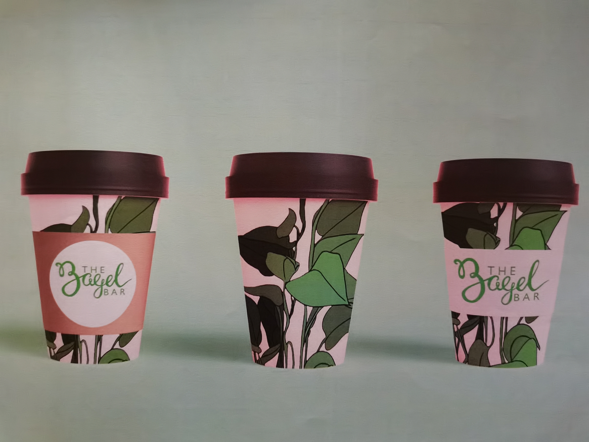
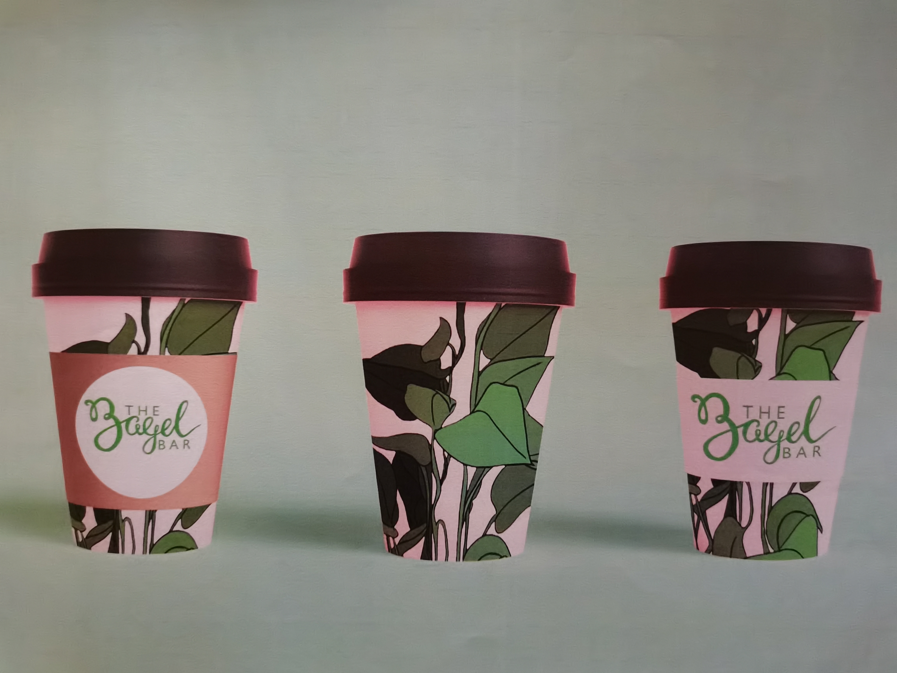
Process of how the Bagel Bar logo was made, along with sample images of mock-ups and the designs of bagel boxes and takeaway coffee cups for the cafe. This project was done outside of school in order for me to understand the basics of graphic design and how I can build up graphics from simple lines and images I had on my laptop into something that is for commerical use.
・Game Character・

A drawing sketch of a Plague Doctor character from a game I used to play. This game is now roughly 9 years old and I used to play it when I was younger. It has gained popularity over the years and I saw the character design for it on my Instagram feed many times; I decided to make a little sketch of what I remember my character looked like while I was still playing the game, just for nostalgia.
・Photography Project・
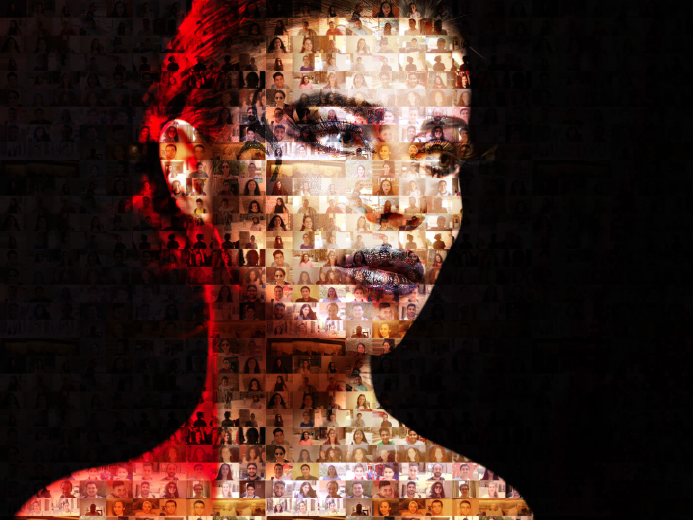
A portrait compromised of numerous smaller portraits and headshots of people around the AUC campus edited with Photoshop. I had gone to a summer camp in order to improve my photography skills and the final assignment was to combine images in Photoshop in order to make it as if the final image was made of numerous small pictures.
・Flower Shop Logo Design・

A collection of flower clipart images altered and edited to fit as a logo for a flowershop. I was assigned to make a business card for a company which sells flowers. I had combined numerous cliparts of flowers I had found online for Creative Use in order to see what would work and what wouldn't work out correctly; using that clipart collage I was able to determine the colour scheme of the business.
・Quick Still-Life Sketch・

A quick sketch of the potted plants under my windowsill. These potted plants are placed on top of a bookshelf. THis was part of an extracurricular project in which I had to depict what home means to me. Since my house was filled with all sorts of green plants, flowers, and cacti, it felt appropriate to have a rough sketch of the window with the most plants underneath it, which is in the living room. I've moved houses now and that window doesn't have as many plants as it did before but my house is still flourishing with plants.
︰Watercolour Works︰
・Crystals・
.jpg)
Watercolours blended together to show hue and blending of colours. This was inspired by a phase I had where I was infatuated with crystals and the amount of colours that a single crystal can have and how all these coulours blend almost perfectly with each other. Therefore, I tried my best to replicate the fluidity of colours crystals have using watercolours.
・Still-Life of Traditional Russian Ornaments・
.jpg)
Practice for still-life drawing and painting using traditional Russian ornaments and table cloth with traditional Russian sewing pattern. It was a challenge for myself to paint still life with all the proper shadings with the help of the lighting along with the fact that were numerous objects in front of me. Since all the objects in front of me were not of a typical square or circular shape it was quite difficult to get the shading correct and the dark and light spots on the vase, wicker basket, and the cloth on the table and background.
・Static Scenery・
.jpg)
Watercolour painting of a scenery from a game I had watched a playthrough of. In the game, the colour scheme was cool with a splash of pink and red whenever the sun would set and time was stationary, as if someone was stuck at one point in time. What appealed to me about the scenery of this game was how fluid the surroundings seem, the grass, trees, and sky, despite the game time itself being stationary and not moving forward.
︰Oil & Acrylic Paints︰
・Parrot・
.jpg)
A drawn version of a parrot I had seen while I was travelling and touring through Istanbul, Turkey. Unlike the parrots I have seen before in Egypt, this one had pink and read feathers and stood out in the daylight. I took a photo of it and set out to work on it using oil pastels to show how much the colours of this parrot stood out. The leaves and branches in the background serve as to show the contrast between the colours of the bird and the sky.
・Sea Cliff・
.jpg)
An oil pastel painting of a seaside cliff I had seen while on a roadtrip to a different city while my family and I were on vacation in Azerbaijan. It was late night by the time we reached our destination, and we were driving by cliffsides that were close to the sea since that was the fastest route to the next city. The light of the full moon that night made the waves look entrancing and the scene itself was breathtaking, to be so close to the sea yet so far away.
・Mentor's Portrait・
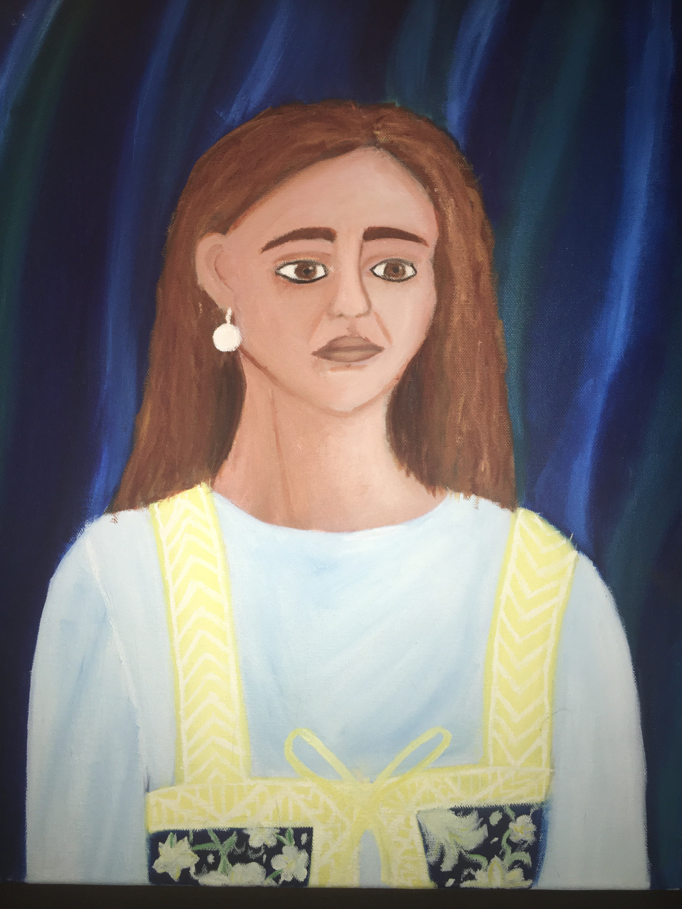
An oil painting portrait of my mentor during the summer of 2018. As my final challenge for this art course, I had to paint a live portrait of my mentor using oil paints. I had never done any portraits of anyone and had a small basic understanding of oil paints from a project I had done before, so this was a challenge for me. The final product turned out to be a lot better than I had thought it would turn out to be.
・My Second Home・
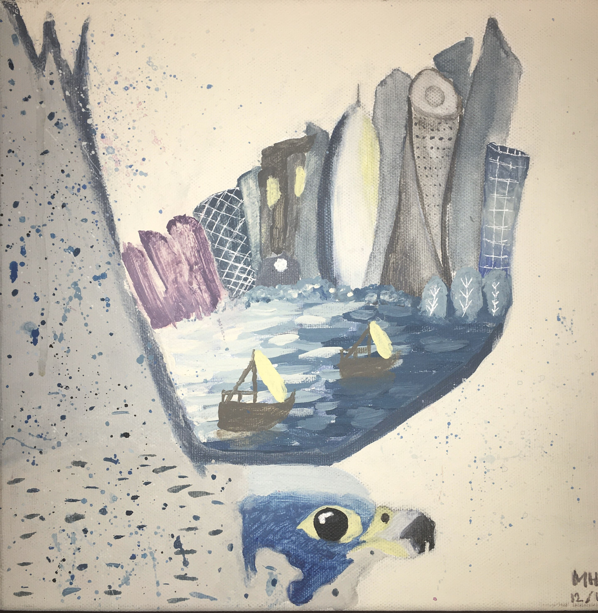
An entry for an art competition that was held by the Ministry of Education. The topic for the competition was to visually represent your home. Since Qatar is my home, along with my home country Egypt, I had painted one of its national animals, the falcon, along with the famous Corniche view, which accurately represents how I see Qatar.
・Christmas・
.jpg)
This was a quick pastel sketch done in the Romanian airport while waiting for the next flight. My mum and I had a transit of 8 hours and I didn't have a visa to be able to exit the airport, so we stayed inside. It was close to Christmas time and the entire airport was decorated with Christmas trees, wreaths, ornaments, and lights. I found it fasinating how bright and spacious the airport seemed with the help of these decorations despite being a small area for the DutyFree. I had wantd to remember this place so I drew some of the decorations and ornaments that were close to where my mum and I were sitting.
・Night Out・
.jpg)
This is a repainting of Van Gogh's "Café Terrace at Night"; this was my first experiment and trial of painting with oil paints. This painting had helped me understand better how to use oil paint, how to mix and which brushes work best with this type of paint. This painting was a learning experience and I am proud with the way it turned out, despite not being an exact replica of the original but having my interpretation on it.
・Cherry Blossom in Spring・
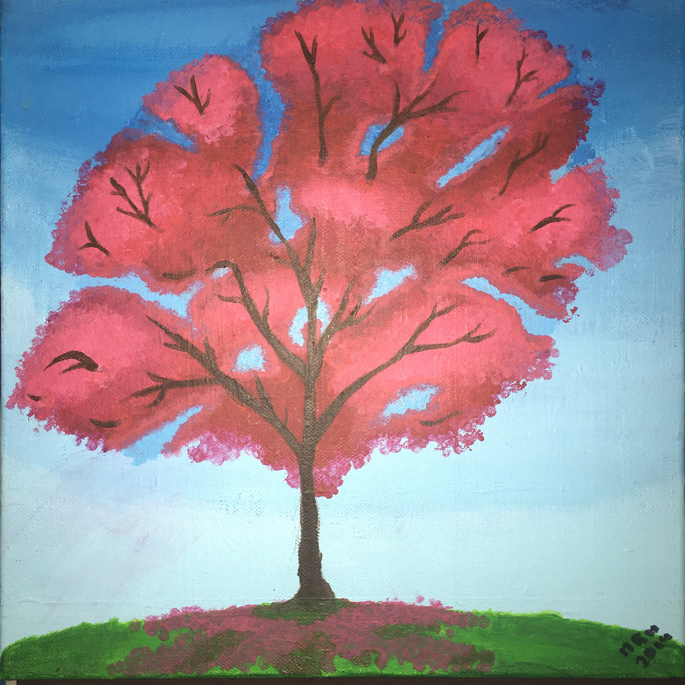
I had watched a TV show where a tree was a majot plot point, and it had characteristics of a cherry blossom tree. The tree was the link to all life, and that for every blossom that blooms a new life is created, and for every flower that gets blown away a life is taken away, either by natural means or forcefully. This painting was inspired by that tree; the tree lays undisturbed in an isolated area guarded by a select group of people in the fear that if someone or something were to rock it or touch one of the branches then there would be mass genocide of all species. In the painting, the tree is on a desolate hill where nothing but the wind disturbs it; no animals or critters to accidentally scratch at the bark or birds to settle on the branches and cause the blossoms to fall.
︰In-School Works︰
・Poster on Safety Awareness・
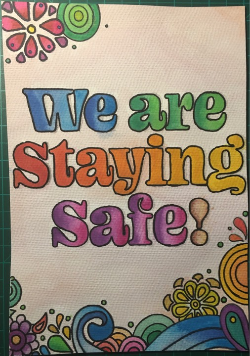
This poster was made with watercolours and is currently hung inside of the Grade 12 English classroom to serve as a reminder that, despite going back to school and attending real-life classes, we need to follow safety proceedures in order to make sure that we stay safe and keep the other people around us safe as well from getting infected. The colours used in this poster keep it bright and eye-catching so that people can see it easily and understand what is written.
・Sculpture・
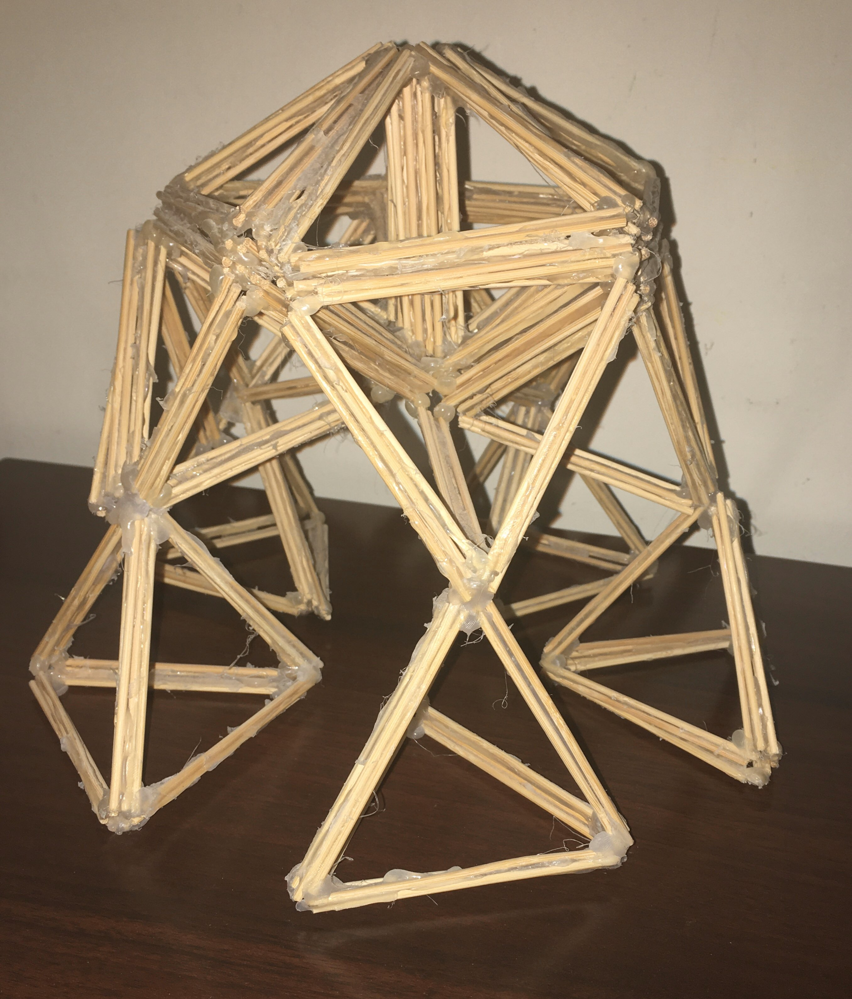 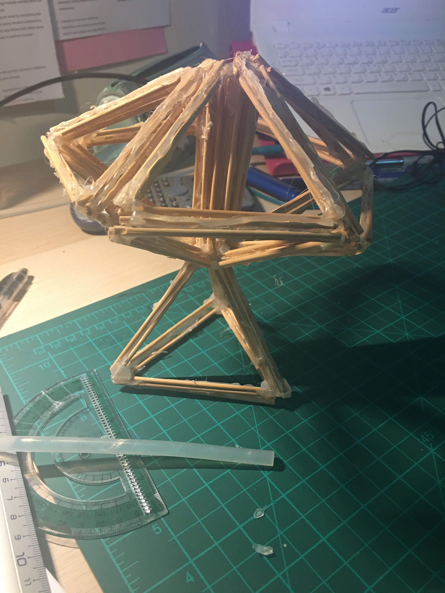 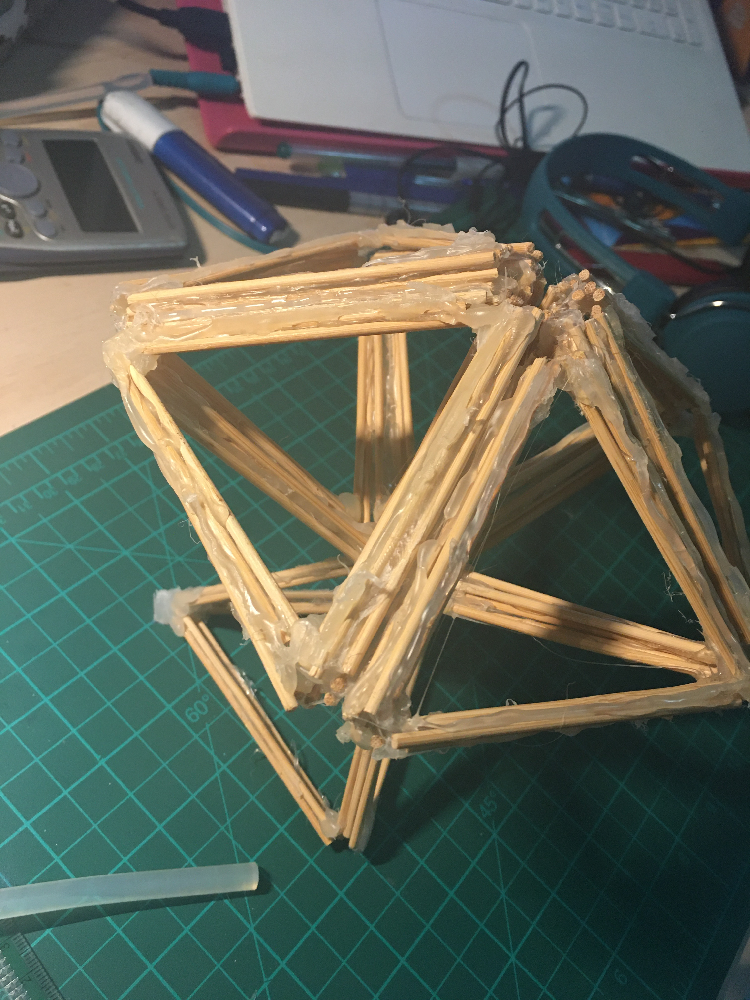
This is a geometrical sculpture made of small wooden skewers. The base shape of this design is a double-stick triangle, which was stuck together to make a three-faced pyramid with a base at the bottom. Both sculptures show how stable the model is, despite being connected at fine and small points. The first sculpture has more pyramids attached to the base in order to show the stability; the second sculpture, however, is attached to only one pyramind, and despite that fact, it remained completely balanced.
・Oil Pastels・
.jpg)
An oil pastel drawing of sunflowers. It is a reimagining of Van Gogh's sunflowers inspired by the countryside of Moldova (which is rich in sunflowers), with a much cooler background and a focus on one of the sunflowers rather than a collection of multiple sunflowers in a vase. This painting was mainly inspired by the rows and rows of sunflowers I had seen on the Moldovan countryside as we were having a roadtrip from one city to another to reach a relative's house.
・Artist Research: Van Gogh・

I had researched about Vincent van Gogh and answered related questions about him. His full name is Vincent Willem van Gogh; he was born on March 30th, 1853 in Zundert, Netherlands. Some of his well-known paintings are: The Starry Night, Café Terrace at Night, The Night Café, Starry Night Over the Rhône, and Almond Blossoms. The painting in which I find most inspiring is The Starry Night, which was painted while Van Gogh was in an asylum; it depicts the view from the east-facing window of his asylum room at Saint-Rémy-de-Provence, just before sunrise, with the addition of an imaginary village.
・Painting on Hangers・
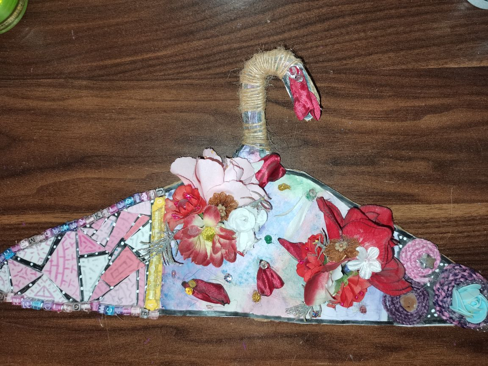
Instead of painting on paper glued onto a mental hanger, I cut out a piece of cardboard in the shape of a hanger and stuck paper on it in order to paint it properly. I divided the hanger into 3 sections, painted the left and right sections black and the middle section with galaxy colours. I then glued on geometrical shapes, spirals, and lines on the black spaces; on the galaxy-couloured ssection, I stuck flowers, petals, and gemstones to brighten up the hanger. I wrapped the hanging part with a thread in order to give it more stability.
・Recycling・
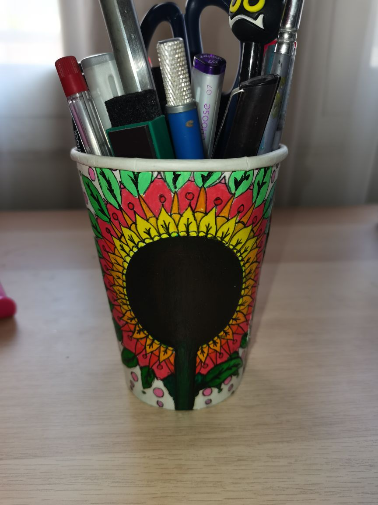
This is a re-purposed Starbucks cup; I use it as a penholder and a stationary holder for all my pens, pencils, and other stantionary. I took a Starbucks coffee cup, cleaned and disinfected it thoroughly, and drew on a small sketch of a sunflower in a mandala form in order to cover the Starbucks logo. I used glossy acrylic paint to paint the sunflower mandala. I coloured it according to hues and shades and made sure that the colours were blended properly. I also outlined the mandala with a black sharpie so that the details were more visible.
・DIY Mobile Stand・
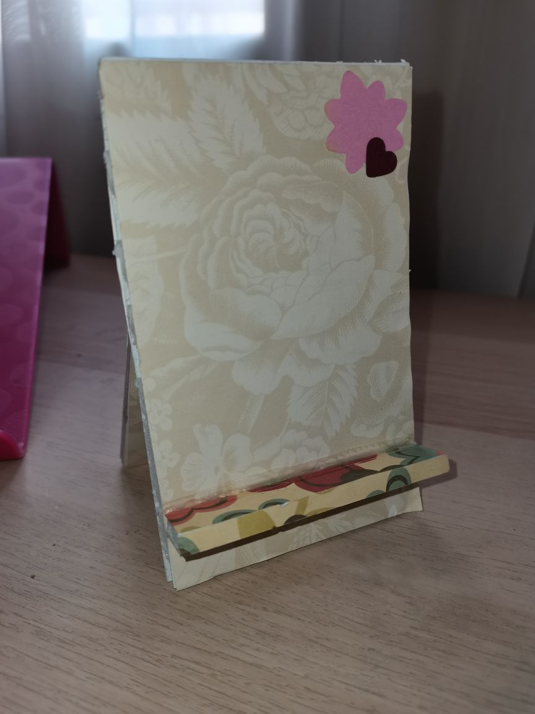
A small portable mobile stand. It's made with cardboard cutouts that fit my phone; the back is low enough and wide enough to ensure that the back camera is still usable despite being held up at a certain angle. The little ledge is able to support the weight of the phone without breaking and falling off. I had decorated the stand with print paper of flowers so that it is not a simple, bland colour and so that it is more customised.
・Paper Mosaic Art・
.jpg)
Instead of cutting up coloured paper and pasting it in the pattern of the image I sketched, I had painted this still-life in a mosiac pattern. I chose to paint this because some of the colours that I wanted to use aren't available as coloured paper, such as the purple, pale pink, and different shades of brown. This is supposed to be a still-life of a vase with cherry blossoms inside, a tomato, red and white onion, a pink scarf in the background, and a yellow and orange table cloth.
・Unique Crafts Project・

For this project I had taken newspaper and riped it up into small pieces and stuck it on a black card paper in neat and orderly rows and columns, also to mainly fit the middle section. I then positioned a pair of shoes and sketched out their outlines. Instead of using black acrylic paint, I used black ink in order to colour in the image. I had diluted 4 different sets of ink with water to serve as shades and left 1 cup without any water to be the darkest. I painted in the image and ended up with the picture above.